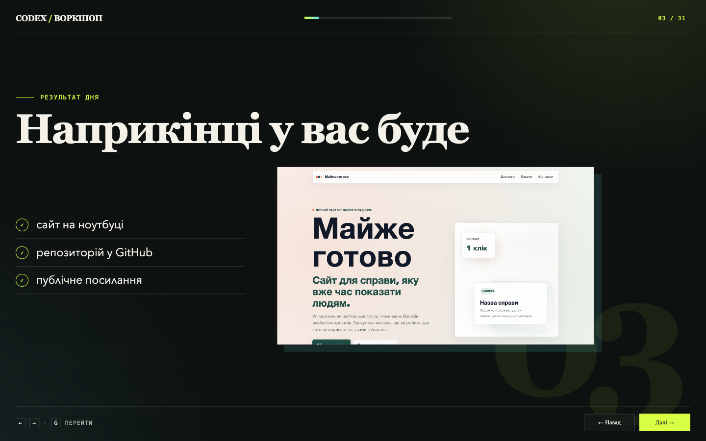
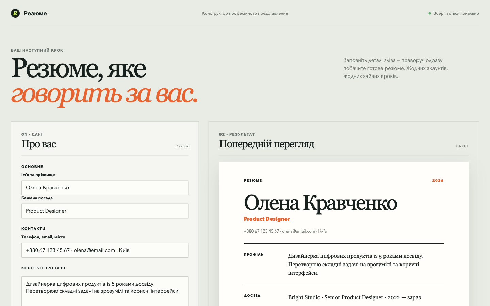
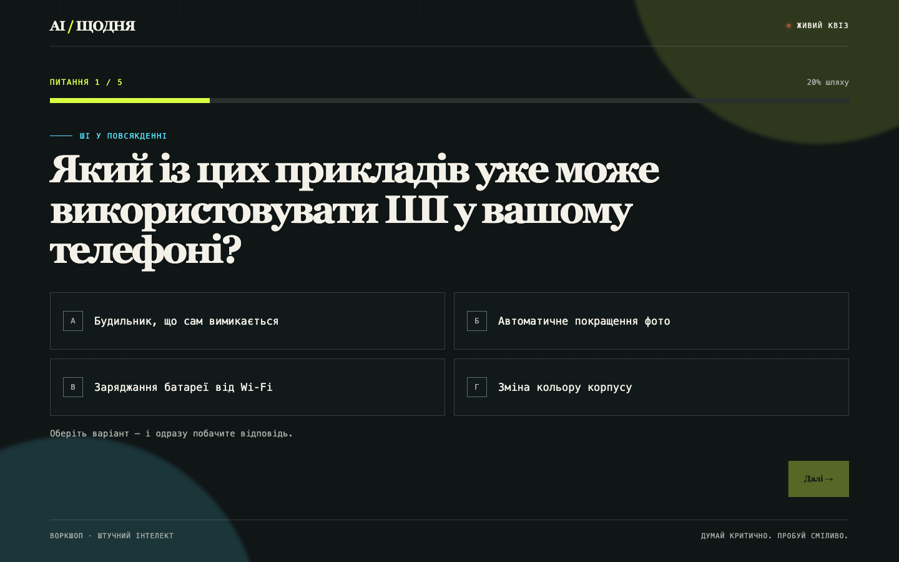
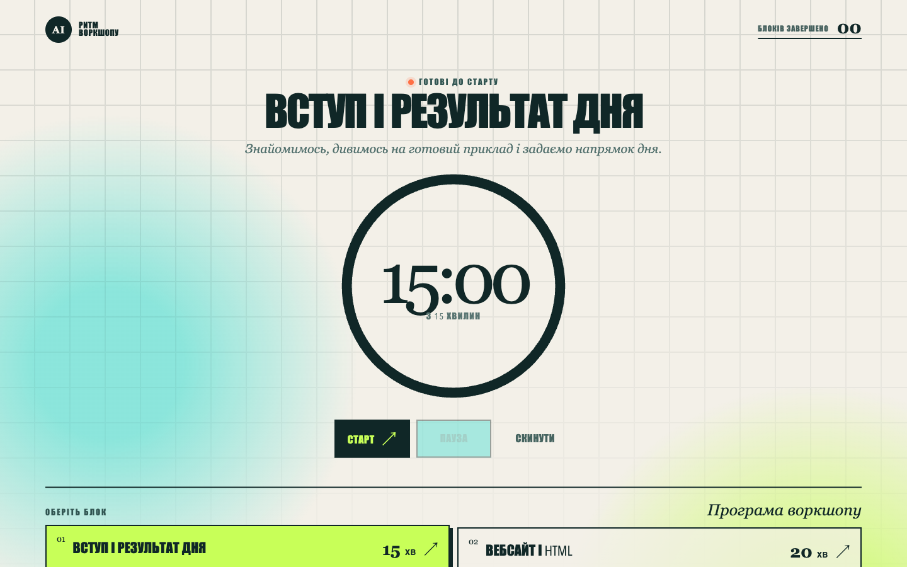
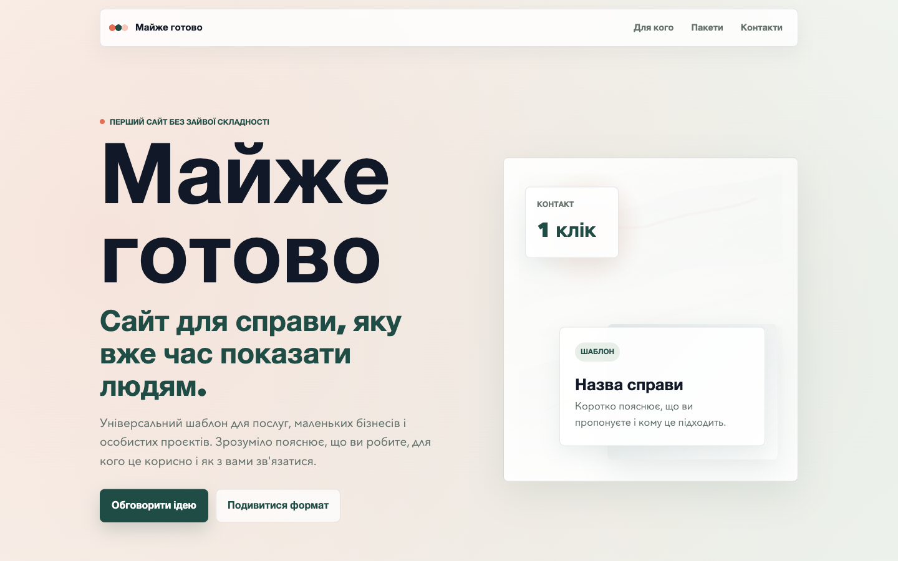

01Презентація · 31 слайд
Перший сайт з Codex
Повний маршрут воркшопу: від простої моделі вебу до публічного посилання.
Колекція локальних HTML-інструментів
Створено разом із Codex
П’ять незалежних прикладів в одному місці: від презентації до інструмента, який зберігає дані прямо у браузері.

01Презентація · 31 слайд
Повний маршрут воркшопу: від простої моделі вебу до публічного посилання.

02Локальний інструмент
Заповнюєте дані — й одразу бачите готове резюме без акаунта та сервера.

03Інтерактивна сторінка
П’ять коротких запитань, миттєвий фідбек і результат наприкінці.

04Таймер · localStorage
Таймер, перерви й програма заняття в одному автономному HTML-інструменті.

05Статичний сайт
Завершена інформаційна сторінка для послуги, невеликої справи або особистого проєкту.
Усі п’ять прикладів — звичайні HTML, CSS і JavaScript-файли.
Ідея → промпт → файли → перевірка → результат